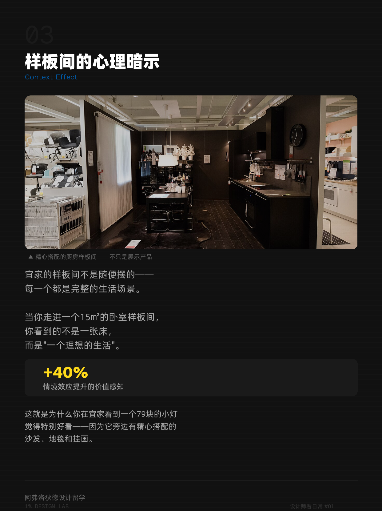

每次去宜家，是不是都有同一个剧本？本来只想买个杯子，出来的时候花了俩小时，还多掏了五百块。把你按在这个剧本里的，是那条单向动线。它不拦你，也不锁门，只是让你每往前走一步，都比回头容易。
我以前讲过这个话题，标题起得特别狠，叫「宜家的路线设计，让你多逛了 3 倍时间」。这次认真重写，我盯着那个 3 倍看了半天，问自己，这个数哪来的。
答不上来。
所以这篇换个讲法。宜家的动线确实值得拆，它是空间设计里的经典教材。那些听着很专业的数字，我要一个一个重新审，能查的查，查不到的老实说。数字之外还有一件更值得写的事，走在这条路上，你的身体都经历了什么，在哪里慢下来，在哪里被推着走。
别急着问宜家怎么套路你。先问它到底用空间，替你做了多少个你以为是「自己决定」的选择。
宜家的单向动线，脚下这条单行道
宜家最核心的一招，叫单向动线（One-way Layout）。从你踏上那条斜坡式的入口起，路线基本就定死了。斜坡送你上去，地上的箭头接住你，从那一刻起，往前走是顺路的，回头是逆行的。你想回头都费劲，它压根没给你画回头路。每一个展区，你都必须经过。
这个思路的鼻祖，常被追溯到一位奥地利建筑师 Victor Gruen。他最早构想那种全封闭、没有窗户、把街区和时间都隔在外面的购物中心，后来人们管这类让人忘记原本目的的效应叫格鲁恩效应（Gruen Effect）。Gruen 这个人是真的，这套概念也是真的。
但要泼盆冷水。宜家是不是刻意照着格鲁恩效应设计，这套设计到底能量化成多少迷失比例，我没见过靠谱的测量。单向动线能解释的，是一件朴素得多的事，它最大化了每一件商品的曝光。你绕一圈，几乎所有东西都从你眼前过了一遍。这不需要心理学大词，这是货架效率。走在里面你能感觉到一种速度差，主通道上人和箭头一起催你往前，一拐进展区，节奏才重新归你自己管。

十五平米的卧室，替你把日子摆好
你在宜家看到的样板间，没有一间是随便摆的，每一间都是一个完整的生活场景。十五平米的卧室，配好床头灯、地毯、挂画，连书桌上放本什么书都替你想好了。走在主通道上你是被推着走的，一进样板间，脚步自己就慢下来。你站在这间小卧室里盘算的，已经是自己家那面空墙。
我原稿里写过，情境效应让你的价值感知提升 40% 以上。这次我去查，40% 这个数找不到对应的一手实验，所以我删了它。方向我仍然信。把一件东西放进它该出现的场景里，你对它的好感确实会涨。一支单看平平无奇的台灯，搁在精心搭配的卧室里，就显出我也想要这种生活的味道。
这招数字产品里也用烂了。卖软件的不卖功能清单，卖用了它之后的那个你。SaaS 的着陆页给你看的没有一堆按钮，是一张干干净净、仿佛所有问题都被解决之后的工作台截图。一模一样的逻辑。


1 块钱的冰淇淋，卡尼曼的峰终定律
逛到快散架的时候，你会撞见宜家那个 1 块钱的冰淇淋、几块钱的热狗。这不是宜家心善。
这是峰终定律（Peak-End Rule）。心理学家丹尼尔·卡尼曼发现，人们对一段体验的记忆，主要被两个点决定，一个是体验里的峰值，最好或最坏的那一刻，另一个是结束时的感受。中间拖了多久、累不累，反而记得最模糊。
卡尼曼是拿过诺贝尔经济学奖的，峰终定律是他被引用最多的工作之一，可信度没问题。宜家在终点放一个便宜到离谱的冰淇淋，等于人为给你造一个愉悦的结尾。你回家以后，记不清走了多少公里，只记得出门时嘴里那口甜。回想一趟宜家，冒出来的总是那口甜和某个心动的样板间，中间那些走麻了的通道，在记忆里是一片模糊。
说句实话。峰终定律本身是真实研究，但宜家因此多赚多少、每个人都会被影响，这类推论是大家的延伸解读，没有出现在实验原话里。别把营销案例，当成定律本身。
峰终定律告诉你，用户离开你产品时的最后那一下，格外决定他对你的整体印象。结账、退订、退出这种地方，别偷懒。
自提区把库存堆给你看
等你终于逛完展区，下楼到了自提区，货架高得要仰脖子，同一样东西一摞一摞堆到顶。逛展区时那点慢慢挑的兴致，到这儿变成搬箱子的体力活。
这是仓储式陈列，故意把库存堆出来给你看。它的潜台词是，这么多，肯定便宜。Costco 用的是同一套逻辑。
人对划算的判断，很受视觉密度影响。满坑满谷的堆头，会让人下意识压低自己对单价的预期。人站在这种货架跟前会自动矮半截，仰头看完，再低头看价签，心里已经先认了它便宜。这招不需要数字也能讲明白，它就是一个被反复验证的视觉暗示。
那条故意调暗的快捷通道
很多人不知道，宜家其实有快捷通道，可以跳过展区直达仓库和收银。但它的标识，做得相当不显眼。
为什么？让你一不小心多逛几个区才是目的，让你快速买到就走不是。这套系统没有骗你，它从头到尾都给你留了出口，只是把出口的亮度，调得很低。走得动的人，多半就顺着箭头把全程走完了。
一条单向动线，其实同时在回答四个人的问题
- 顾客
- 我想逛得有收获，又不想迷路。→ 给你一条清晰的路，但路上全是诱惑。
- 商品
- 我怎样才能被看见？→ 全部摊在你必经的路线上。
- 员工
- 我怎么高效补货、引导客流？→ 动线统一，动线本身就是管理工具。
- 经营
- 怎么把「只想买杯子」的人，变成「顺手买了五百块」的人？→ 在他的路上，放满他没打算买的东西。
我把这套逻辑搬回了数字产品
做产品的人逛宜家，最该从它身上偷走的，是它对路径的理解。地毯偷不走，也用不上。
- 路径即展示。你的新手引导，有没有把核心价值一个个摆在用户必经的路上？还是把好东西埋在三层菜单底下，等用户自己来挖？宜家不给你挖的机会，它把路修到商品跟前。
- 场景化呈现。SaaS 着陆页给你看那张工作台截图，讲的正是这一招。你自己的第一屏，放功能清单，还是放用上之后的场景，值得重新挑一次。
- 给一个好的结尾。用户完成关键任务的最后一步，你有没有给他留一个愉悦的峰终？结账完成、退订、退出，这些页面就是你的 1 块钱冰淇淋该站的地方。
但我也想给自己提个醒。宜家做的是零售，零售的终极指标就是让你多买。可如果你做的是效率工具，照搬让人多逛就是犯罪。工具该做的，是让人赶紧办完、赶紧走人，走的时候还念你一句好。判断标准就一条，你的产品是靠用户多待挣钱，还是靠用户办完事挣钱，前者可以学宜家，后者赶紧把路修短。把零售的逻辑无脑搬进工具，是我见过最多的设计误用。
下次逛宜家，给自己三个观察
- 数分叉。你走的这条路上，有几次真的可以拐走的出口？宜家把它们藏在哪了？
- 看结尾。你出门前最后一次掏钱，买的是那个 1 块钱的冰淇淋，还是一件你本来没想买的东西？
- 找场景。你最终掏钱买的东西里，有几件是被样板间那个生活场景说动的，而不是真的需要？
- 宜家动线作为空间设计案例的分析，属于设计领域的公开讨论。Victor Gruen 与格鲁恩效应、丹尼尔·卡尼曼的峰终定律，均为可查证的真实人物与理论。
- 原稿中的「多逛 3 倍时间」「价值感知提升 40% 以上」「购买概率提升 15%」等精确数字，我未能追溯至一手实验，已在文中删除或标注存疑。
- 本文基于公开可见的宜家门店布局做设计与行为分析，不代表宜家官方设计意图。